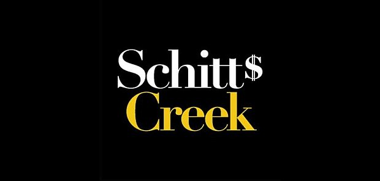

This website is dedicated to the award-winning Canadian hit show Schitt's Creek!
Schitt's Creek is a Canadian television sitcom created by Dan Levy and his father, Eugene Levy, that aired on CBC Television from 2015 to 2020.
The show follows the wealthy Rose family, who lose their fortune after being defrauded by their business manager. They move towards rebuilding their lives with their sole remaining asset: a remote town named Schitt's Creek somewhere in Canada, which Johnny bought for David's birthday in 1991 as a joke. The Roses are forced to relocate to Schitt's Creek, moving into two adjacent rooms in a run-down motel. While the family adjusts to their new lives, their well-to-do attitudes conflict with the town's more provincial residents
Exploring this website will reveal to you information about the titular town and its old and new residents, aswell as finding out which character you are most like!